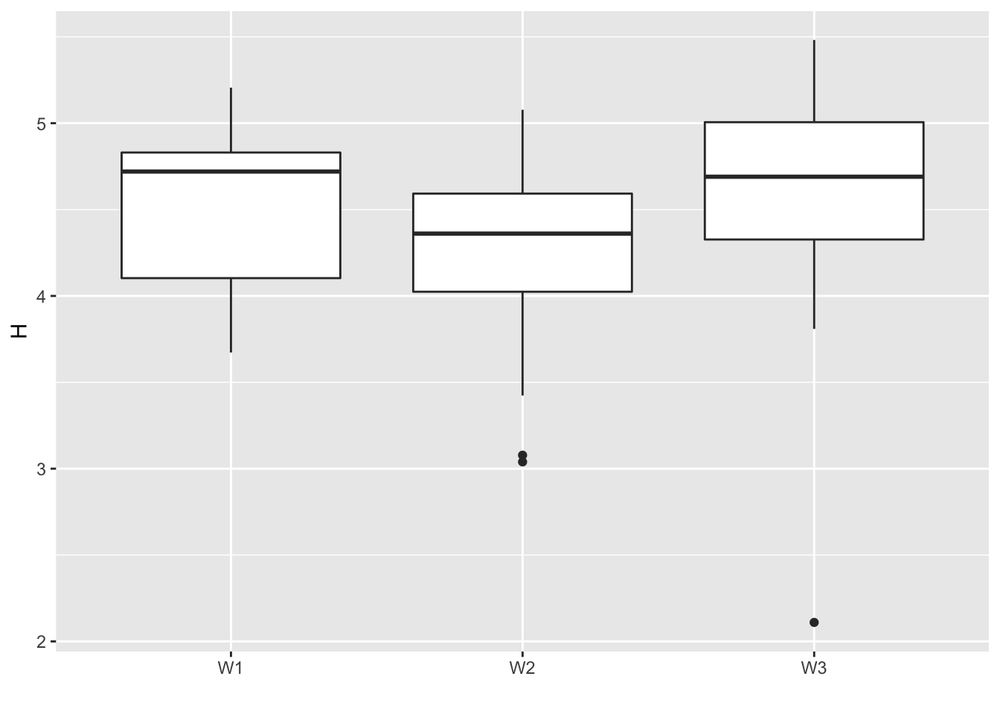
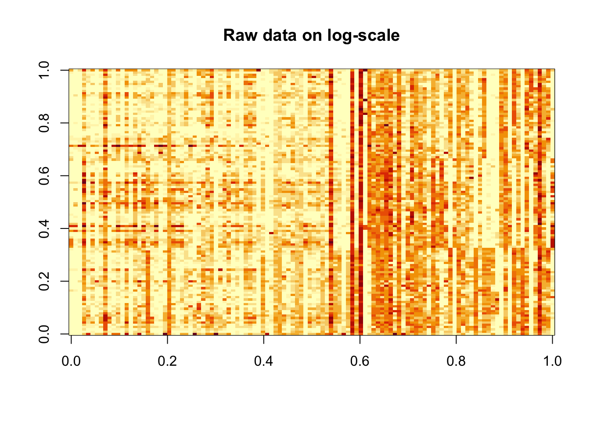
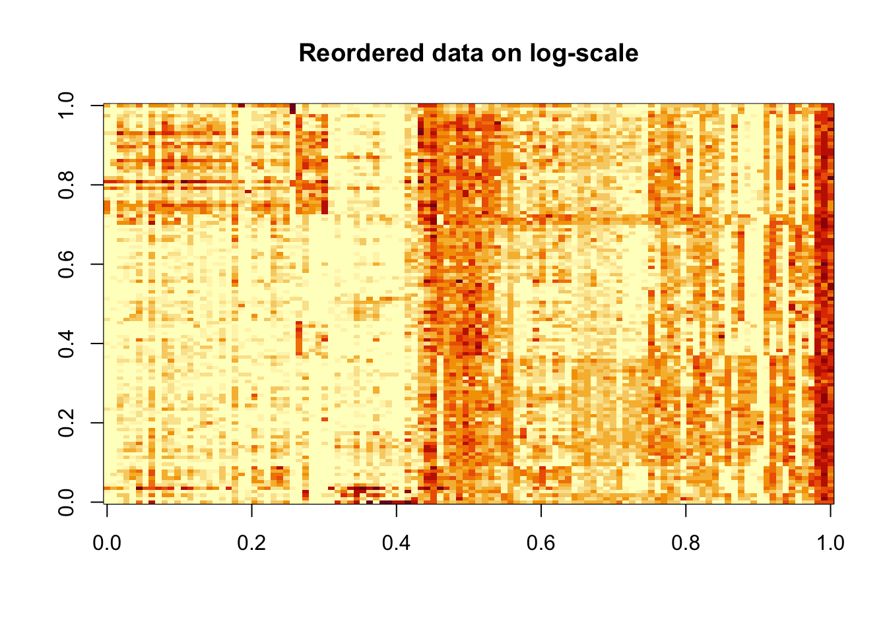
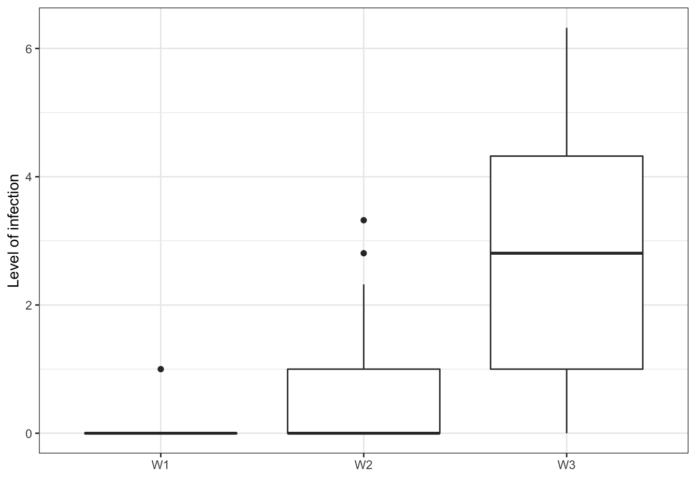
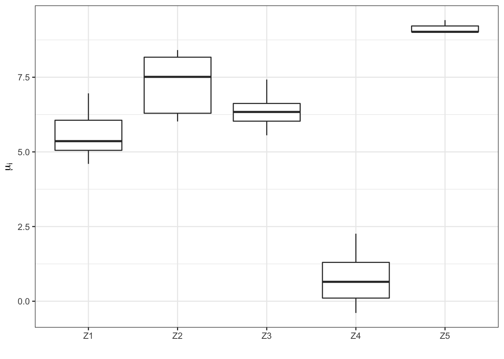

This tutorial intends you to use cobiclust to find structure in the Erysiphe alphitoides pathobiome dataset kindly provided by Corinne Vacher.
It consists of metabarcoding data of leaf-associated microbiome of 114 leaves sampled from 3 different oaks, with different status with respect to a pathogen. Two barcodes were used: the 16S for the bacterial fraction and the ITS1 for the fungal fraction. One taxa (Erysiphe alphitoides) is of particular interest as it is the causal agent of oak powdery mildew. The goal of the original study (10.1007/s00248-016-0777-x) was to assess the impact the impact of Erysiphe alphitoides on the foliar fungal and bacterial communities.
Details on the sampling protocol and bioinformatic analyses of the raw reads are available in the original publication.
The data have been preprocessed and filtered (to remove low-abundance, low abundance taxa). They are available from the website
Details on the metadata are available from the website.
We first load cobiclust (ggplot2 for some graphics, purr and dplyr for some data manipulations) and pathobiome_usefulfun.R providing functions useful for this example.
library(cobiclust)
library(ggplot2)
library(purrr)
library(dplyr)We then import the data in R and format them for cobiclust. The fungal and bacterial communities were sequenced using different barcodes and should thus have different offset. We compute offsets matrix with the Total Counts method using the function calculate_offset_perkingdom.
counts <- read.table(file = "https://mia-paris.pages.mia.inra.fr/formation_abondance_reseau/tutoriels/PLN_TP/Data/counts.tsv")
metadata <- read.table(file = "https://mia-paris.pages.mia.inra.fr/formation_abondance_reseau/tutoriels/PLN_TP/Data/metadata.tsv")To be on the safe side, let’s transform counts and offsets to matrices (they are imported as data.frame by default), and transpose then to have the OTUs in rows and the leaves in columns.
counts <- as(t(counts), "matrix")
# Calculate offsets matrix
mat_nuj <- calculate_offset_perkingdom(counts)Let’s calculate the percentage of zero counts.
length(which(counts==0))*100/length(counts)## [1] 34.43739We here fit the Poisson-Gamma Latent Block Model implemented in the cobiclust package with a block-specific dispersion parameter (akg = TRUE) for \(K = 1, ..., 8\) and \(G = 1, ..., 6\).
Be caution : this chunk may be quite long to terminate; so we to not evaluate here.
Kmax <- 8
Gmax <- 6
arg2 <- rep(rep(1:Kmax), Gmax)
arg3 <- rep(1:Gmax, each = Kmax)
res_akg <- pmap(list(arg2, arg3), ~ cobiclust(counts, ..1, ..2, nu_j = mat_nuj, akg = TRUE))arg1 <- 1:(Kmax*Gmax)
# Calculation of the variational BIC and variational ICL criteria
crit_akg <- pmap(list(arg1, arg2, arg3), ~ selection_criteria(res_akg[[..1]], K = ..2, G = ..3), )
crit_akg <- data.frame(Reduce(rbind, crit_akg))
# Selection of the best model
vICL <- crit_akg %>% dplyr::filter(vICL == max(vICL))
vICL
ou_best <- apply( vICL[,c(1,6:7)], 1, FUN=function(x) intersect(which(arg2==x[2]),which(arg3==x[3])))
best_akg <- res_akg[[ou_best]]# We directly fit the best model for this example
best_akg <- cobiclust(counts, K = 5, G = 3, nu_j = mat_nuj, a = NULL, akg = TRUE)# Groups in rows
Z <- best_akg$classification$rowclass
# Groups in columns
W <- best_akg$classification$colclass
table(Z)## Z
## 1 2 3 4 5
## 35 14 13 49 3table(W)## W
## 1 2 3
## 11 70 35# Description of the groups
#sapply(1:max(W),FUN=function(x) table(colnames(counts)[W==x]))
sapply(1:max(Z),FUN=function(x) rownames(counts)[Z==x])## [[1]]
## [1] "b_OTU_1045" "b_OTU_109" "b_OTU_1191" "b_OTU_123"
## [5] "b_OTU_1431" "b_OTU_17" "b_OTU_171" "b_OTU_18"
## [9] "b_OTU_182" "b_OTU_20" "b_OTU_22" "b_OTU_235"
## [13] "b_OTU_24" "b_OTU_29" "b_OTU_304" "b_OTU_31"
## [17] "b_OTU_42" "b_OTU_443" "b_OTU_444" "b_OTU_447"
## [21] "b_OTU_47" "b_OTU_49" "b_OTU_55" "b_OTU_58"
## [25] "b_OTU_59" "b_OTU_662" "b_OTU_69" "b_OTU_72"
## [29] "b_OTU_73" "f_OTU_4" "f_OTU_28" "f_OTU_29"
## [33] "f_OTU_32" "f_OTU_579" "E_alphitoides"
##
## [[2]]
## [1] "b_OTU_1093" "b_OTU_112" "b_OTU_1200" "b_OTU_153" "b_OTU_21"
## [6] "b_OTU_25" "b_OTU_26" "b_OTU_33" "b_OTU_34" "b_OTU_39"
## [11] "b_OTU_548" "b_OTU_90" "f_OTU_12" "f_OTU_15"
##
## [[3]]
## [1] "b_OTU_11" "b_OTU_13" "b_OTU_8" "f_OTU_5" "f_OTU_7"
## [6] "f_OTU_8" "f_OTU_9" "f_OTU_10" "f_OTU_13" "f_OTU_19"
## [11] "f_OTU_26" "f_OTU_576" "f_OTU_1141"
##
## [[4]]
## [1] "b_OTU_23" "b_OTU_27" "b_OTU_329" "b_OTU_35" "b_OTU_36"
## [6] "b_OTU_364" "b_OTU_37" "b_OTU_41" "b_OTU_44" "b_OTU_46"
## [11] "b_OTU_48" "b_OTU_51" "b_OTU_56" "b_OTU_57" "b_OTU_60"
## [16] "b_OTU_625" "b_OTU_63" "b_OTU_74" "b_OTU_76" "b_OTU_81"
## [21] "b_OTU_87" "b_OTU_98" "f_OTU_2" "f_OTU_6" "f_OTU_17"
## [26] "f_OTU_20" "f_OTU_23" "f_OTU_24" "f_OTU_25" "f_OTU_27"
## [31] "f_OTU_30" "f_OTU_33" "f_OTU_39" "f_OTU_40" "f_OTU_43"
## [36] "f_OTU_46" "f_OTU_57" "f_OTU_63" "f_OTU_65" "f_OTU_68"
## [41] "f_OTU_79" "f_OTU_317" "f_OTU_662" "f_OTU_672" "f_OTU_1011"
## [46] "f_OTU_1085" "f_OTU_1090" "f_OTU_1567" "f_OTU_1656"
##
## [[5]]
## [1] "f_OTU_1" "f_OTU_3" "f_OTU_1278"table(data.frame(metadata$tree,W))## W
## metadata.tree 1 2 3
## intermediate 3 32 3
## resistant 8 28 3
## susceptible 0 10 29# alpha_kg
print(best_akg$parameters$alpha)## [,1] [,2] [,3]
## [1,] 0.02738619 0.014200282 0.055314510
## [2,] 0.01387322 0.005689657 0.002912498
## [3,] 0.04091091 0.168706131 0.073183804
## [4,] 2.64282096 8.597589419 3.272826807
## [5,] 0.01355924 0.050488428 0.020537934# a
print(best_akg$parameters$a)## [,1] [,2] [,3]
## [1,] 0.17873547 0.1782464 0.2528521
## [2,] 0.09903957 0.1132469 0.1612811
## [3,] 0.45398646 0.4276497 0.4119108
## [4,] 0.24266944 0.3178020 0.3038278
## [5,] 0.76408940 0.5494621 0.6464182Let’s represent the Shannon diversity Index, a common measure of diversity using the proportional abundances of each species, calculated for each leaf, according to the group of leaves.
don <- counts
p_i <- apply(don, 2, FUN = function(x) x / sum(x))
H <- apply(p_i, 2, FUN = function(x) - sum(x * log2(x), na.rm = TRUE))
df <- data.frame(Leaf = 1:ncol(don), H = H, W = factor(round(best_akg$info$t_jg %*% (1:max(W)))))
levels(df$W) <- paste("W",levels(df$W),sep="")
hwplot <- ggplot(data = df, aes(x = W, y = H))
hwplot <- hwplot + geom_boxplot() + labs(x = "")
print(hwplot)
rm(p_i, df)image(log(counts+0.5), main = "Raw data on log-scale")
image(log(counts[order(Z), order(W)]+0.5), main = "Reordered data on log-scale")
plot.infection <- ggplot(data = data.frame(pmInfection = log2(metadata$pmInfection), W = as.factor(paste("W",W,sep=""))), aes(y = pmInfection, x = W))
plot.infection <- plot.infection + geom_boxplot() + labs(x = "", y = "Level of infection") + theme_bw()
print(plot.infection)## Warning: Removed 42 rows containing non-finite values (stat_boxplot).
df1 <- data.frame(Microorg = rownames(counts), Z = round(best_akg$info$s_ik %*% (1:max(Z))))
df2 <- data.frame(Microorg = rownames(counts), Mu = best_akg$parameters$mu_i)
df <- merge(df1, df2, by = "Microorg")
tmp <- sapply(1:max(Z), FUN = function(x) mean(best_akg$parameters$mu_i[Z == x]))
df$Z <- factor(df$Z)
levels(df$Z) <- paste("Z", levels(df$Z), sep = "")
muzplot <- ggplot(data = df, aes(x = Z, y = log(Mu)))
muzplot <- muzplot + geom_boxplot() + labs(x = "Z")
muzplot <- muzplot + theme_bw() + labs(x = "", y = expression(mu[i]))
print(muzplot)
rm(df1, df2, df, tmp)We propose to plot the \(vICL\) criterion according to the (y-axis) to the number of groups in rows \(K\) (x-axis). Colours depends on \(G\) values.
crit_akg$G <- as.factor(crit_akg$G)
plot.vICL_K <- ggplot(data = crit_akg, aes(y = vICL, x = K, group = G, colour = G))
plot.vICL_K <- plot.vICL_K + geom_point() + geom_line() + theme_bw() + theme(legend.position = "bottom")
print(plot.vICL_K)This vignette is designed to help you work with cobiclust. Naturally, you can use your imagination to represent or visualize the results.
I would like to thank Mahendra Mariadassou, Julien Chiquet and Stéphane Robin who wrote a vignette on the use of PLNModels based on the same example and from which I was very strongly inspired for the beginning of this vignette.